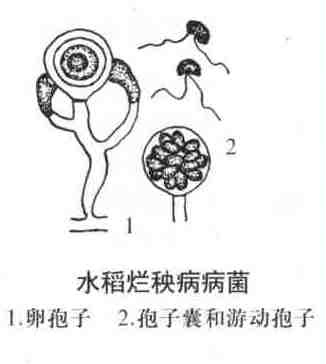

水稻烂秧病
病害别名：无
为害部位：种子、幼苗
病害性质：一般病害
病原：绵腐菌(Achlya spp.)、腐败菌(Pythium spp.)和镰刀菌(Fusarium spp.)水稻烂秧病病菌
病害表现：生理性烂秧：由低温缺氧引起的，为幼芽卷曲变黄褐色至褐色，幼根变黑；盐碱害引起的烂秧为芽尖有盐霜；由风害引起的为芽尖吹干黄萎。侵染性烂秧：绵腐病和腐败病幼芽被害部分初呈乳白色胶状物，后呈黄色绵状物；立枯病为茎基腐烂易拔起，心叶萎垂卷缩，茎基软腐，全株黄褐枯死。
 水稻烂秧病
水稻烂秧病
发病规律：低温缺氧是引起烂秧的主要原因。绵腐病和腐败病的病菌主要借灌溉水传播，水秧田易发生。立枯病菌在土壤或病残体中越冬，借气流传播。旱秧田易发生。
病害防治:l．加强预防 选择背风向阳、土质好、排灌方便、田面平整的田块做秧田，精耕细作，用腐熟肥料加洁水灌秧。做到适时播种，培育壮秧，增强抗病能力。2．药剂防治 在秧苗一叶一心期，用65％敌克松可湿性粉剂600倍液预防。始病期用200－400倍液喷雾。